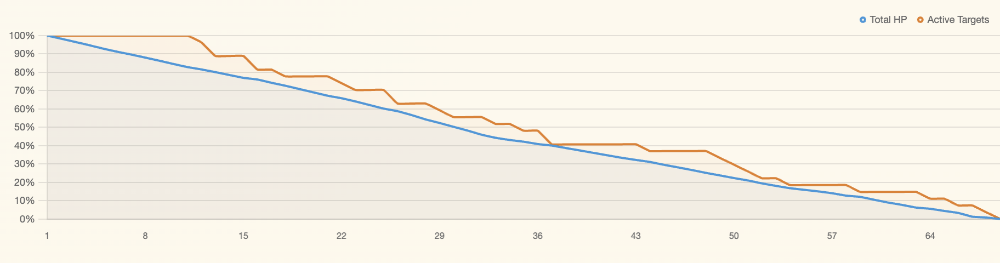
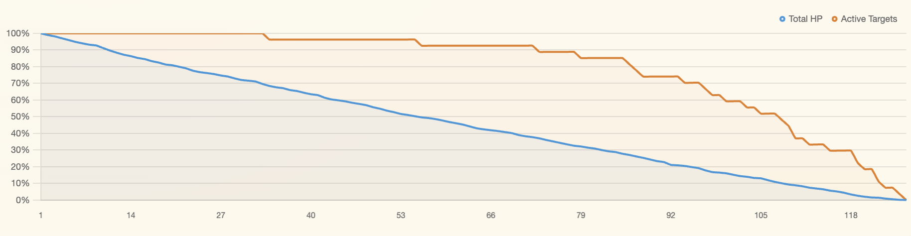
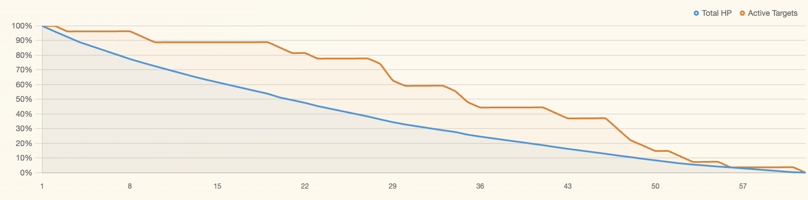
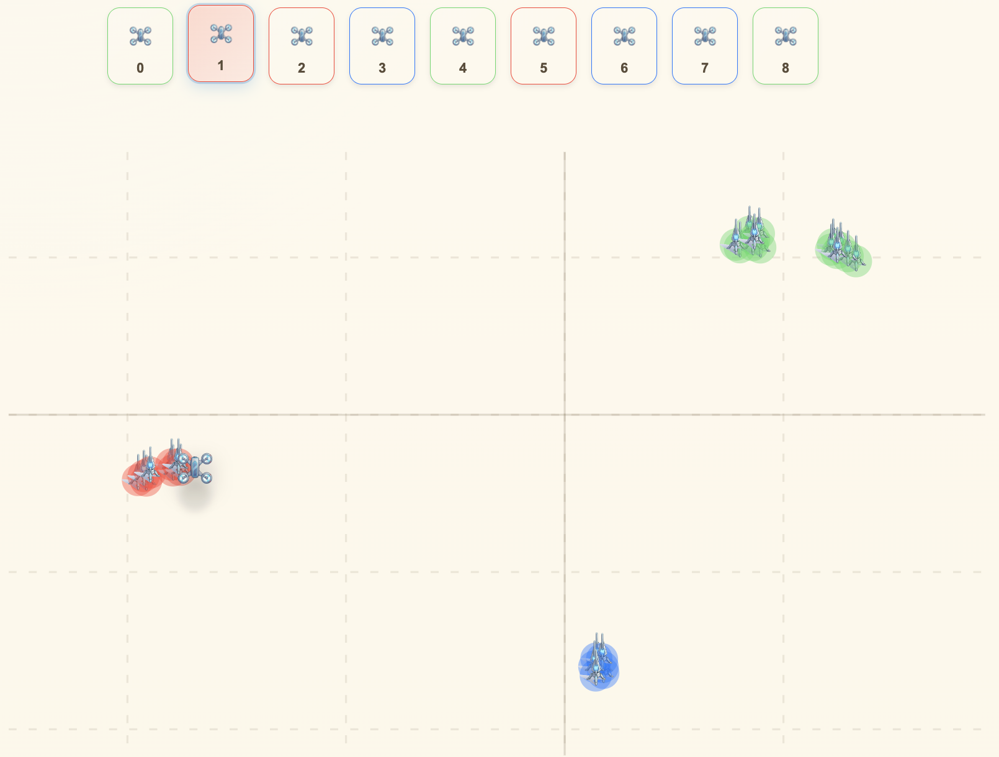

Yigal Meshulam · Alexander Apartsin · Yehudit Aperstein
Zero-Knowledge Multi-Robot Task Allocation (ZK-MRTA) is a decentralized task-allocation setting in which agents have no prior knowledge of task attributes, no knowledge of their own or others' capabilities, and no direct communication channel. Under these constraints, agents must learn from the outcomes of interaction rather than from explicit models of compatibility, feasibility, or cost. This paper formalizes ZK-MRTA as a distinct MRTA problem class and presents a decentralized matrix-factorization policy that reinterprets collaborative filtering as online latent-utility learning: each drone maintains a private local model of drone-target effectiveness, selects actions from its own utility estimates, and updates that model from shared observations of engagement outcomes without parameter sharing.
To evaluate this setting, the paper introduces a Gymnasium-compatible PettingZoo benchmark that enforces zero-knowledge observability constraints and generates configurable hidden compatibility structure. The environment records policy-agnostic measures of task efficiency and coordination quality. Preliminary results on multi-agent scenarios with hidden compatibility structure show that the proposed policy substantially reduces episode length relative to a random baseline, closes a significant portion of the match-quality gap to an oracle benchmark, and recovers embedding structure that aligns with the hidden drone-target compatibility modes in the tested configuration. These early findings suggest that meaningful latent structure and useful decentralized coordination can emerge under strict zero-knowledge constraints, while also surfacing characteristic limits of the setting, including crowding and overkill causing the system to behave less optimally — a characteristic byproduct of the matrix-factorization policy's decentralized and communication-free nature.
Swarm robotics has emerged as a promising framework for coordinating large numbers of autonomous agents in dynamic, uncertain, and high-risk environments. Advances in aerial, ground, and maritime autonomy have made it increasingly feasible to deploy heterogeneous swarms whose members differ in sensing, payload, endurance, or strike capability [1]. A representative example is a drone swarm operating in a contested environment, where agents must repeatedly decide which targets to engage as the mission unfolds. Analogous allocation problems arise in civilian settings as well, such as assigning maintenance crews with unknown specializations to faults of unknown type. In all of these settings, overall performance depends not only on the capability of individual agents, but also on whether tasks are allocated in a way that avoids redundancy, adapts to uncertainty, and exploits heterogeneity effectively.
These challenges fall within the broader problem of Multi-Robot Task Allocation (MRTA), which studies how tasks should be distributed across multiple agents to optimize system-level performance. Classical MRTA approaches include optimization-based methods, market-based mechanisms, reinforcement learning, and coalition-formation strategies. Although these approaches differ in mechanism, they typically rely on some combination of prior knowledge about tasks, prior knowledge about agent capabilities, and explicit inter-agent communication. Such assumptions are often appropriate in structured environments, but they become restrictive when task properties are hidden, capabilities are not known in advance, and coordination must emerge under severe informational constraints.
This paper addresses that gap by introducing Zero-Knowledge Multi-Robot Task Allocation (ZK-MRTA), a problem formulation in which agents must allocate tasks without prior knowledge of task attributes, without knowledge of their own or others' capabilities, and without direct communication. Under this formulation, agents learn only from the outcomes of their own actions and from limited public evidence generated by the swarm. The environment may contain a true hidden compatibility structure between drones and targets, but that structure is never exposed directly to the agents. Instead, agents observe restricted world-state information and public interaction traces, and must act without explicit symbolic matching rules.
The contribution of this work is therefore not only a solution method, but a problem formulation whose assumptions differ fundamentally from those of standard MRTA. Rather than assuming that costs, feasibility, or compatibility are known or communicable, ZK-MRTA treats them as latent quantities that must be inferred from sparse experience over time. This perspective also changes how recommendation-inspired methods should be interpreted in the present setting: the goal is not preference prediction, but latent utility estimation under sequential, decentralized, and observation-limited conditions. In this paper, that idea is instantiated through a decentralized matrix-factorization policy in which each drone maintains a private local model of drone-target effectiveness and updates it from shared observations of engagement outcomes. To support systematic evaluation, the paper also introduces a configurable benchmark environment and a set of strategy-independent metrics that capture both task effectiveness and coordination efficiency.
These considerations motivate the following research question: To what extent can a decentralized, collaborative-filtering-inspired approach learn effective task allocation under strict zero-knowledge constraints, and what coordination dynamics emerge as the policy acquires latent structure?
This paper makes three main contributions. First, it formalizes ZK-MRTA as a distinct task-allocation setting in which compatibility, capability, and task structure are hidden from the agents and cannot be recovered through direct communication, and it defines a suite of strategy-independent performance metrics for evaluating behavior under these constraints. Second, it introduces a decentralized matrix-factorization policy that reinterprets collaborative filtering as online latent-utility learning from sparse public interaction outcomes. Third, it presents a modular benchmark environment built on Gymnasium and PettingZoo and uses it to provide a first empirical evaluation of decentralized matrix-factorization-based learning under strict zero-knowledge constraints in a single preliminary configuration, including analysis of latent-structure recovery, coordination dynamics, and efficiency relative to random and oracle baselines.
This section situates ZK-MRTA at the intersection of three relevant literatures: swarm robotics and MRTA, decentralized online learning under uncertainty, and collaborative filtering with latent-factor models. The goal is not only to survey prior work, but to clarify which assumptions dominate existing approaches, where those assumptions become limiting under strict zero-knowledge constraints, and why matrix-factorization-based latent-utility learning provides a suitable theoretical foundation for the method studied in this paper.
Swarm robotics studies how large groups of relatively simple agents can achieve coordinated behavior through decentralized interaction. Its key advantages are robustness, scalability, and flexibility, which make swarm-based systems attractive in domains such as disaster response, hazardous exploration, and military operations [2]. As robotic swarms become more heterogeneous, however, coordination becomes substantially more difficult, since agents may differ in sensing, mobility, endurance, or specialized functional capabilities. This challenge motivates the study of Multi-Robot Task Allocation (MRTA), which concerns how tasks should be assigned to multiple agents in order to optimize overall system performance.
Early work in MRTA focused largely on task-specific heuristics and bio-inspired coordination schemes. Over time, the field evolved toward more formal frameworks that support systematic classification and comparison of allocation problems and solution methods [3], [5], [6]. This shift was significant because it transformed MRTA from a collection of application-driven algorithms into a more unified research area with clearer assumptions, modeling choices, and evaluation criteria.
A foundational contribution to MRTA was the taxonomy introduced by Gerkey and Matarić, who categorized task-allocation problems along three dimensions: task type, assignment horizon, and the number of robots required per task [7]. Later work extended this taxonomy to address richer dependencies such as synchronization, precedence constraints, and multi-mission settings [8], [9]. These frameworks demonstrate that many realistic MRTA scenarios are dynamic, time-extended, and shaped by heterogeneous agent capabilities, making them considerably more complex than static matching problems.
Within this broader landscape, several major solution families have emerged. Market-based approaches allocate tasks through bidding and utility exchange, offering a decentralized mechanism that can adapt to changing conditions, but they depend on meaningful utility estimation and communication among agents [4]. Optimization-based methods formulate allocation as a centralized or semi-centralized combinatorial problem and can produce high-quality solutions, yet they usually assume prior knowledge of task properties, agent capabilities, and environmental conditions [10], [14], [15], [16]. Reinforcement-learning approaches allow policies to be learned from experience, but in multi-agent settings they face substantial challenges related to non-stationarity, scalability, and training complexity [11], [12]. Coalition-formation methods are particularly relevant for tasks that require joint effort, but they also assume explicit reasoning about capabilities and at least partial communication or negotiation among agents [13].
Although these approaches differ in methodology, they share a common premise: the allocation process relies on some combination of prior knowledge, explicit utility modeling, or inter-agent communication. This premise limits their suitability in environments where agents do not know task difficulty, do not know their own effectiveness in advance, and cannot exchange information directly.
A separate line of research has addressed sequential decision-making under uncertainty from the perspective of multi-armed bandits and online learning. In the multi-armed bandit framework, an agent must repeatedly choose among actions with unknown reward distributions, balancing the exploration of unfamiliar options against the exploitation of currently promising ones [17], [18]. Contextual bandits extend this by conditioning action selection on observable features [30], while combinatorial bandits generalize to settings where multiple resources are allocated simultaneously [31]. These models are relevant to task allocation because they formalize the core challenge agents face in ZK-MRTA: learning which tasks to select from limited and noisy outcome data, without prior knowledge of the underlying reward structure.
In multi-agent settings, the decentralized partially observable Markov decision process (Dec-POMDP) provides a formal framework for independent agents acting under partial observability without communication. A common practical approach is independent learning, where each agent treats its own observation-action-reward stream as a separate learning problem, ignoring the non-stationarity introduced by other agents' evolving policies. While theoretically limited, independent learners have been shown to perform well in practice, particularly when agents share a common reward structure or can observe each other's actions [11]. This architecture is directly relevant to the present work, where each drone maintains a private model but observes public interaction outcomes. However, ZK-MRTA imposes a stricter information regime than standard Dec-POMDP formulations: agents lack not only knowledge of others' states and policies, but also of the reward model itself, including their own task-level capabilities. Bayes-adaptive and model-learning extensions of Dec-POMDPs can in principle represent reward-model uncertainty, yet the standard formulation assumes a known reward structure, and most practical independent-learning work inherits that assumption.
The exploration–exploitation trade-off is central to any online learning approach in the ZK-MRTA setting. Classical strategies include ε-greedy schedules with multiplicative decay, Upper Confidence Bound (UCB) methods that maintain optimistic estimates, and Boltzmann (softmax) selection that samples actions proportionally to exponentiated scores. Prisadnikov [19] investigated the exploration–exploitation trade-off specifically in the context of probabilistic matrix factorization for recommendation, demonstrating that the choice of exploration strategy has a significant impact on convergence behavior and final solution quality in sparse-data regimes. This finding is directly applicable to the present problem, where agents must balance exploiting emerging compatibility estimates against exploring under-observed task assignments.
Despite their relevance, bandit and independent-learning approaches typically do not incorporate latent structure across agents and tasks. A bandit learner treats each agent-task pair as an independent arm, without leveraging the fact that similar agents may be effective on similar tasks. This limitation motivates the use of latent-factor models, which can generalize across the interaction space from sparse experience.
The central gap addressed in this research lies precisely at the intersection of the above literatures. Classical MRTA methods generally presuppose that agents can evaluate tasks using predefined knowledge, estimate their own fitness for execution, or coordinate through explicit communication. Bandit and online-learning approaches relax the prior-knowledge assumption but typically treat each agent-task pair independently, without modeling shared latent structure. In more realistic decentralized settings, an agent may not know whether it is suitable for a given task until after acting, and it may not be able to coordinate directly with other agents at all—but there may exist hidden regularities in the compatibility landscape that could be exploited if discovered.
This motivates the formulation of Zero-Knowledge Multi-Robot Task Allocation (ZK-MRTA), a stricter formulation of MRTA in which agents have no prior knowledge of task attributes, no prior knowledge of their own or others' capabilities, and no communication channel. The term "zero-knowledge" is used here in the informational sense — absence of prior knowledge — and is not related to the cryptographic notion of zero-knowledge proofs. Instead, they must act and learn solely from observable interaction outcomes over time. In this sense, ZK-MRTA extends the existing MRTA literature by elevating uncertainty and communication absence from implementation challenges to defining assumptions of the problem itself.
Conceptually, this setting is closest to the dynamic and heterogeneous side of established MRTA taxonomies, particularly the time-extended multi-robot setting captured in prior frameworks [7]–[9]. At the same time, it departs from the classical literature by removing the availability of explicit cost and feasibility information to the agents themselves. This makes ZK-MRTA not merely a new algorithmic variation, but a distinct formulation of decentralized task allocation.
To address hidden agent-task compatibility under sparse observations, this research draws on collaborative filtering (CF), a mature family of methods from recommender systems [20], [21]. In classical recommendation settings, CF predicts unobserved user-item preferences from partially observed interaction data. In the present context, that logic is reinterpreted: agents correspond to users, tasks correspond to items, and observed task outcomes replace ratings. The goal is therefore not preference prediction, but the estimation of latent operational utility under decentralized and information-poor conditions.
Collaborative-filtering methods are commonly divided into memory-based and model-based approaches. Memory-based methods rely directly on similarity computed from observed interactions, whereas model-based methods infer lower-dimensional latent structure behind the interaction matrix [20], [21], [22]. For the present problem, this distinction matters. ZK-MRTA produces sparse, noisy, and incrementally accumulated observations, so methods that rely primarily on direct similarity over observed interactions are less suitable than methods that can infer shared latent structure across the full interaction space. In that respect, Matrix Factorization (MF) is especially relevant because it represents both agents and tasks through latent vectors and predicts unobserved interactions from their compatibility.
This perspective is valuable in the present setting because the interaction matrix is not available in advance; it must be constructed incrementally from experience. Accordingly, CF is not used here as a static recommendation engine, but as a mechanism for online latent-utility learning. The agent does not infer what it "prefers"; rather, it infers what it is likely to perform well on. This reinterpretation makes collaborative filtering relevant not as an imported application metaphor, but as a principled way to model hidden compatibility when direct symbolic descriptions are unavailable.
It is important to distinguish this reinterpretation from classical centralized collaborative filtering. In standard recommender systems, a single global latent factorization is learned over a shared interaction matrix aggregated from all users. In the ZK-MRTA setting, by contrast, the interaction matrix is not pre-existing and globally available: it is constructed incrementally from observed engagements, and each agent maintains its own private local latent model rather than participating in a shared global factorization. The method studied in this paper is therefore best understood as a decentralized, online matrix-factorization policy inspired by collaborative filtering, rather than as a standard centralized recommender system.
Matrix Factorization has become one of the most influential model-based collaborative-filtering approaches because it explains observed interactions through low-dimensional latent representations [24], [25]. In the classical setting, a user-item matrix is approximated by the product of latent user and item factors, enabling the prediction of missing entries from shared structure in the data. Reinterpreted for ZK-MRTA, this means that agents and tasks can be embedded into a shared latent space in which predicted compatibility corresponds to expected task effectiveness.
Singular Value Decomposition (SVD) and related factorization methods are especially relevant in sparse settings because they extract dominant latent structure while suppressing noise [23]. Probabilistic extensions of matrix factorization further improve robustness under uncertainty by modeling latent factors and observations probabilistically [24], [26]. Collectively, this literature shows that latent-factor methods are well suited to settings in which signal is sparse, indirect, and partially noisy — precisely the regime that characterizes ZK-MRTA.
A critical distinction for the present work is between batch and online matrix factorization. Classical MF and SVD are typically applied to a static, partially observed matrix. In contrast, ZK-MRTA requires incremental updates as new observations arrive during sequential interaction. Online matrix factorization methods address this by updating latent factors via stochastic gradient descent (SGD) after each new observation, rather than recomputing the full decomposition. Brand [27] demonstrated that lightweight online SVD revisions can maintain factorization quality in streaming settings, making latent-factor models viable for real-time recommendation. In the ZK-MRTA context, this translates to agents that refine their latent models after every engagement, progressively improving their task-selection accuracy without requiring batch reprocessing of historical data.
More recent work has explored neural collaborative filtering [28] and factorization machines [29], which offer greater representational flexibility but require more data and model complexity. For the decentralized, low-data regime considered here — where each agent must learn from tens to hundreds of private observations without access to centralized training or shared gradients — classical SGD-based matrix factorization offers a more appropriate balance between expressiveness, data efficiency, and interpretability.
A further branch of recent work considers federated and decentralized collaborative filtering, in which latent factors are learned across distributed nodes without transmitting raw interaction data [32]. Although this line of research addresses distribution and privacy rather than the strict zero-knowledge regime studied here, it confirms that latent-factor learning can be performed without centralized data aggregation, reinforcing the suitability of MF-based methods for decentralized ZK-MRTA.
Taken together, the three reviewed literatures support a single synthesis. Classical MRTA provides the structural vocabulary — taxonomies, solution families, heterogeneity — but assumes information access that ZK-MRTA explicitly removes. Online learning and bandit frameworks address decision-making under uncertainty, but treat agent-task pairs as independent arms and therefore cannot exploit shared latent structure. Collaborative filtering, and in particular online matrix factorization, supplies exactly what the other two lack: a principled mechanism for inferring hidden compatibility from sparse, incrementally accumulated observations, without explicit feature engineering or centralized knowledge.
This synthesis motivates the core claim of this paper: under strict zero-knowledge constraints, effective task allocation can be approached as decentralized latent-utility learning from sparse public interaction history, using private local matrix-factorization models rather than explicit symbolic capability models or direct inter-agent communication.
This section formalizes ZK-MRTA as a sequential multi-agent decision problem under strict informational constraints. It defines the core assumptions, interaction model, objectives, and notation used throughout the paper; notation is summarized in §3.10.
We consider a decentralized multi-agent system composed of a set of agents and tasks. Let $\mathcal{A} = \{a_1, a_2, \ldots, a_m\}$ denote a finite set of agents, and $\mathcal{T} = \{t_1, t_2, \ldots, t_n\}$ denote a finite set of tasks.
The system evolves over discrete time steps $t = 1, 2, \ldots$, where agents interact with tasks through a shared environment. Each task $t_j \in \mathcal{T}$ is associated with an internal state (e.g., active/inactive or remaining workload), which evolves over time as a result of agent actions.
At each time step, agents select actions that influence task states, and the environment updates accordingly. The goal is to determine how agents should allocate themselves to tasks over time in order to optimize global system performance, subject to the informational constraints of the Zero-Knowledge setting.
The ZK-MRTA framework is defined by strict informational constraints:
which carries the actions and outcomes of other agents but contains no capability or identity information (see §3.6 for the exact structure).
These assumptions eliminate access to explicit models of task-agent compatibility and require all decision-making to rely solely on observed interaction outcomes.
Note on terminology. The label zero-knowledge refers specifically to the absence of prior knowledge about task attributes and agent capabilities — not to the absence of all environmental observations. Agents do receive a public summary of interaction outcomes at each step (the joint action and reward vectors); this broadcast carries no capability or identity information and does not constitute communication in the traditional sense. This usage follows the informational interpretation common in the MRTA literature, distinct from the cryptographic usage.
Classical Multi-Robot Task Allocation is typically formulated as an optimization problem defined by:
with the objective of finding an assignment $\Lambda \subseteq \mathcal{A} \times \mathcal{T}$ that minimizes total cost:
$$\min_{\Lambda} \sum_{(a_i, t_j) \in \Lambda} C(a_i, t_j) \quad \text{subject to} \quad G(a_i, t_j) = 1$$This formulation assumes that both cost and feasibility are known or computable in advance.
In contrast, the ZK-MRTA framework removes access to both $C$ and $G$. Agents must therefore infer task suitability indirectly, based solely on observed outcomes, without explicit knowledge of task properties or their own capabilities.
ZK-MRTA is inherently a sequential decision-making problem. At each time step:
This interaction loop can be summarized as:
$$o_t(a_i) \to a_t(a_i) \to \text{environment update} \to \text{outcome}$$Unlike static assignment formulations, task allocation unfolds over time, and agents must adapt their decisions based on accumulated experience and evolving system dynamics.
Within a single time step, individual agents' actions are resolved in a uniformly random order. This ordering governs the sequential resolution of contending engagements — for example, when multiple agents target the same task, an earlier-processed agent may neutralize it before a later-processed agent's shot lands.
The ZK-MRTA framework is defined abstractly, but particular benchmark instances may differ along a small number of structural dimensions. Two relevant axes are task dynamics and agent resource constraints.
The benchmark studied in this paper instantiates passive targets with fixed resilience (HP), so neutralization is a cumulative-damage process.
The experiments reported in this paper use the infinite-capacity variant: no per-agent ammunition limit is enforced, although ammunition consumption is still tracked diagnostically.
At each time step $t$, each agent $a_i \in \mathcal{A}$ receives an observation $o_t(a_i) \in O$, derived from the environment state. The term "local" is avoided here because the observation is not purely private: it combines environment state (task positions and activity) with a shared public summary of the previous step's joint actions and outcomes. No agent receives privileged information beyond what this public summary provides. The observation is a structured tuple:
$$o_t(a_i) = \Big(\mathbf{p},\ \mathbf{b},\ \hat{\mathbf{s}}_{t-1},\ \tilde{\mathbf{r}}_{t-1}\Big)$$where:
A central feature of this observation model is that the two per-agent fields $\hat{\mathbf{s}}_{t-1}$ and $\tilde{\mathbf{r}}_{t-1}$ are public: each agent observes the full joint vector across all $m$ agents, not only its own entry. This public broadcast is the sole channel through which an agent can indirectly observe other agents' behavior, and it replaces the direct communication that classical MRTA approaches assume.
The noise on $\hat{\mathbf{s}}_{t-1}$ corrupts each entry independently with probability $\pi_s \in [0,1]$, replacing it with a uniformly sampled task index; the noise on $\tilde{\mathbf{r}}_{t-1}$ is additive Gaussian with standard deviation $\sigma_r \geq 0$ (see §3.8.1). Setting $\pi_s = 0$ and $\sigma_r = 0$ recovers the fully-observed public-history regime.
In the implementation, $\mathbf{p}$ and $\mathbf{b}$ are transmitted together as a single packed vector of length $3n$ (one $(x, y, \text{active})$ triple per task); the decomposition above is conceptual.
Crucially, observations do not include:
Thus, the structure governing agent-task effectiveness is entirely hidden and must be inferred from interaction history.
At each time step, each agent selects an action:
$$a_t(a_i) \in A$$where the action space $A$ consists of:
Actions correspond to attempted task engagements, and their effects are determined by the underlying environment dynamics. No assumptions are made at this stage regarding the mechanism used to select actions.
The environment is governed by an underlying latent compatibility structure that determines the effectiveness of agent-task interactions.
Each agent $a_i$ and task $t_j$ is associated with hidden latent representations:
$$\mathbf{z}_i^{(a)} \in \mathbb{R}^d_{>0}, \quad \mathbf{z}_j^{(t)} \in \mathbb{R}^d_{>0}$$The raw compatibility between agent $a_i$ and task $t_j$ is governed by the latent dot product:
$$g_{ij} = (\mathbf{z}_i^{(a)})^\top \mathbf{z}_j^{(t)}$$Each task $t_j$ is initialized with a resilience budget $\text{HP}_j > 0$. An engagement by agent $a_i$ applies damage
$$d_{ij} = \max(0,\ g_{ij})$$to the task, reducing its remaining HP by $d_{ij}$. Negative dot products contribute zero damage rather than healing, and the task is neutralized when its HP reaches zero.
The reward received by agent $a_i$ upon engaging task $t_j$ is not equal to the damage applied. Instead, it is a function of latent compatibility, decoupling the learning signal from the task execution outcome. The framework supports two reward modes:
$$r_{ij} = \frac{(\mathbf{z}_i^{(a)})^\top \mathbf{z}_j^{(t)}}{\|\mathbf{z}_i^{(a)}\| \cdot \|\mathbf{z}_j^{(t)}\|}$$
In both modes, the observed reward $\tilde{r}_{ij}$ may be corrupted by additive Gaussian noise with configurable standard deviation $\sigma_r \geq 0$:
$$\tilde{r}_{ij} = r_{ij} + \varepsilon, \quad \varepsilon \sim \mathcal{N}(0, \sigma_r^2)$$If the targeted task is already inactive at the time of engagement, the agent still receives the compatibility-based reward generated by the latent vectors; however, the shot applies no damage and therefore affects performance only indirectly through wasted effort.
These latent variables are not observable to agents and serve only as an internal mechanism generating interaction outcomes. As a result, agents must operate without direct access to the true compatibility structure.
Because multiple agents may independently select the same task within a single time step, the environment tracks collisions as a coordination signal. A collision is registered whenever two or more agents target the same task in the same step: for each such task, every agent beyond the first (in the random processing order of §3.4) contributes one collision to the step count. Collisions are a coordination diagnostic; they do not alter task dynamics or affect rewards directly, but engagements against a task that has already been neutralized earlier in the step produce wasted shots whose rewards still reflect latent compatibility while contributing no damage. Importantly, collisions can arise from two distinct causes: unintentional contention, where independent agents select the same target without coordination, and deliberate focus-fire, where a planner explicitly assigns multiple agents to a single target to accelerate its neutralization. The collision count alone does not distinguish between these; interpretation requires context from the policy's decision mechanism (see §7.6).
The goal of ZK-MRTA is to optimize global system performance over time under the informational constraints defined above. To preserve comparability across decision methods, performance is evaluated using strategy-independent metrics computed from logged interaction traces.
Formally, a decentralized policy is a tuple $\pi = (\pi_1, \ldots, \pi_m)$ in which each $\pi_i$ maps the observation-action history of agent $a_i$ to a next action in $A$. For a given metric $k \in M$, let $\mu_k(\pi)$ denote its expected value under $\pi$, where the expectation is taken over random scenario instantiations (hidden latent configuration, task resilience, initial positions) and observation noise. The ZK-MRTA objective is to design $\pi$ so as to improve $\{\mu_k(\pi)\}_{k \in M}$ relative to reference baselines. Because the elements of $M$ span distinct operational axes (time, efficiency, coordination, and learning quality), this paper evaluates policies along all elements of $M$ rather than collapsing them into a single scalar; policies are compared empirically across sampled scenarios.
At an abstract level, these metrics fall into four categories:
The specific metrics used in the empirical evaluation are:
These metrics constitute the set $M$ in the formal definition below. Their operational computation is specified in the experiments section (§6), while their role in the formalism is to define the system-level objectives against which any policy is assessed.
| Symbol | Description |
|---|---|
| $\mathcal{A} = \{a_1, \ldots, a_m\}$ | Set of agents |
| $\mathcal{T} = \{t_1, \ldots, t_n\}$ | Set of tasks |
| $m$ | Number of agents |
| $n$ | Number of tasks |
| $t$ | Discrete time step |
| $d$ | Latent vector dimension |
| $o_t(a_i)$ | Observation of agent $a_i$ at time $t$ |
| $a_t(a_i)$ | Action of agent $a_i$ at time $t$ |
| $A$ | Action space |
| $O$ | Observation space |
| $\mathbf{a}_t$ | Joint action of all agents |
| $\mathbf{p}$ | Task position matrix |
| $\mathbf{b}$ | Task active/inactive status vector |
| $\hat{\mathbf{s}}_{t-1}$ | Previous joint action vector (public, possibly noisy) |
| $\tilde{\mathbf{r}}_{t-1}$ | Previous observed reward vector (public) |
| $\mathbf{z}_i^{(a)} \in \mathbb{R}^d_{>0}$ | Hidden latent vector of agent $a_i$ |
| $\mathbf{z}_j^{(t)} \in \mathbb{R}^d_{>0}$ | Hidden latent vector of task $t_j$ |
| $g_{ij}$ | Latent dot-product compatibility |
| $r_{ij}$ | Reward signal for agent $a_i$ engaging task $t_j$ |
| $\tilde{r}_{ij}$ | Observed (noisy) reward |
| $\sigma_r$ | Reward noise standard deviation |
| $\pi_s$ | Action-observation corruption probability |
| $\text{HP}_j$ | Task resilience (hit points) |
| $M$ | Set of performance metrics |
| $\pi = (\pi_1, \ldots, \pi_m)$ | Joint decentralized policy |
| $\mu_k(\pi)$ | Expected value of metric $k \in M$ under policy $\pi$ |
| $C(a_i, t_j)$ | Cost function (classical MRTA reference) |
| $G(a_i, t_j)$ | Feasibility function (classical MRTA reference) |
Implementation note. In the accompanying benchmark implementation, the symbols $m$, $n$, and $d$ used throughout this paper correspond to the code variables num_drones, num_targets, and latent_dim respectively. The policy-side factorization dimension (used in §4) is tracked separately in code under a distinct variable to avoid conflating the environment's generative latent dimension with the learner's chosen approximation rank. The shorter symbols $m$, $n$, $d$ are preferred in the paper for consistency with the MRTA literature.
Definition 1 (Zero-Knowledge Multi-Robot Task Allocation — general problem class).
A ZK-MRTA problem is defined by the tuple:
$$\mathcal{Z} = (\mathcal{A}, \mathcal{T}, A, O, E, M)$$where:
The system evolves over discrete time steps. At each time step, each agent receives a per-agent observation $o_t(a_i)$ and selects an action $a_t(a_i)$. The environment applies the joint action $\mathbf{a}_t$, updates task states, produces noisy reward signals $\tilde{\mathbf{r}}_t$, and terminates when all tasks are neutralized or the maximum step limit is reached.
The problem is subject to the Zero-Knowledge constraints defined in §3.2: agents have no prior knowledge of tasks or their own capabilities, cannot communicate, and must rely solely on $O$ at each step. The objective is to design decentralized agent behaviors — algorithms that map observations and private memory to actions — that improve the performance metrics $M$ (§3.9).
Definition 1 intentionally leaves the hidden effectiveness structure abstract, so that ZK-MRTA names a class of problems rather than a single instantiation. Concrete instantiations differ in how the hidden structure generates damage and reward.
Definition 2 (Latent-compatibility benchmark instantiation).
The benchmark studied in this paper instantiates Definition 1 with the following hidden structure (§3.8):
Together with the passive-target, infinite-capacity choices of §3.5, this specifies the concrete environment used in all experiments. Other instantiations of Definition 1 (e.g., categorical compatibility structures, or active-target dynamics) are consistent with the general framework but are outside the scope of this paper.
This section presents the three methods compared in the paper and frames them through a single distinction: what an agent knows or infers about the utility of an assignment (estimation) versus how that information is turned into an action (decision). This framing is useful in ZK-MRTA because the problem is defined precisely by the absence of prior knowledge, explicit communication, and direct access to hidden compatibility structure; different methods are therefore best read as alternative responses to the same core difficulty.
The random policy serves as the weakest baseline and lower-bound reference. It is fully ZK-compliant: it does not use target hit points, hidden target types, latent compatibility values, or any history of previous interactions. Instead, it reads only the visible active/inactive status of each target and samples uniformly from the valid actions.
Depending on configuration, the valid action set may include a no-operation action in addition to all currently active targets. Because the policy has no memory and performs no learning, it treats all active targets as equivalent at every step.
Formally, let $\mathcal{U}_t(a_i)$ denote the set of valid actions available to agent $a_i$ at time $t$, consisting of the indices of active targets and, optionally, a NoOp action. The random policy samples:
$$a_t(a_i) \sim \text{Uniform}(\mathcal{U}_t(a_i))$$This baseline is intentionally naive. Its value lies not in performance, but in providing a clean reference for behavior in the absence of estimation, memory, or coordination.
The oracle policy provides a near-optimal greedy benchmark by assuming privileged access to information unavailable under the ZK assumptions. In the implemented version, the oracle is an HP-aware marginal-allocation planner that uses true latent drone vectors, true target latent vectors, and current target hit points. It is therefore not ZK-compliant and is used only as an idealized comparison point.
Unlike a one-to-one assignment rule, the oracle explicitly allows multiple drones to focus fire on the same target when doing so is beneficial. Its scoring rule combines several factors: effective damage capped by remaining target HP, a bottleneck weight that prioritizes difficult targets, a finish bonus for assignments that eliminate a target in the current step, an overkill penalty that discourages waste, and a future-value term that favors starting progress on hard targets earlier. The planner then performs a greedy marginal-allocation pass, assigning one drone at a time to the currently best drone-target pair until no beneficial assignment remains. This approximates globally efficient short-horizon coordination while retaining a computationally simple greedy structure. Because the oracle relies on privileged state, its purpose is not to model realistic deployment but to indicate the performance ceiling against which decentralized methods can be interpreted.
The main method investigated in this paper is a decentralized matrix-factorization policy inspired by classical collaborative filtering. The key conceptual adaptation is that collaborative filtering is not used here to estimate user preference, but to estimate operational utility: the expected effectiveness of assigning a drone to a target. Drones play the role of users, targets play the role of items, and observed engagement outcomes replace ratings. Because the problem is sequential, decentralized, and observation-limited, the recommender mechanism is repurposed as an online decision policy rather than a centralized offline prediction model.
Classical matrix factorization represents users and items through latent vectors and predicts missing interactions via their dot product. In the present setting, this idea is adapted so that each drone independently maintains a private local model of the interaction space. There is no centralized shared factorization and no direct exchange of learned parameters across drones. Collaboration arises only through shared observations of interaction outcomes. This distinction is essential: the method is collaborative in inspiration, but decentralized in implementation.
For an agent $a_i$, the learned model consists of a drone embedding matrix:
$$P^{(a_i)} \in \mathbb{R}^{m \times d_f}$$and a target embedding matrix:
$$U^{(a_i)} \in \mathbb{R}^{d_f \times n}$$where $m$ is the number of drones, $n$ is the number of targets, and $d_f$ is the factorization dimension (a hyperparameter distinct from the environment's latent dimension $d$). Agent $a_i$'s predicted utility for the interaction between drone $a_k$ and target $t_j$ is:
$$\hat{r}_{kj}^{(a_i)} = (P_{k,:}^{(a_i)})^\top U_{:,j}^{(a_i)}$$where $a_k$ denotes the acting drone whose interaction with target $t_j$ is being evaluated. In the implemented policy, each drone maintains its own local matrices $P^{(a_i)}$ and $U^{(a_i)}$, initialized with entries drawn independently from $\mathcal{N}(0,\, 0.01^2)$ and updated online from observed swarm interaction events.
Although the predictor $\hat{r}_{kj}^{(a_i)}$ is defined for any drone $a_k$, agent $a_i$ only uses its own row $P_{i,:}^{(a_i)}$ when choosing an action (§4.4). The remaining rows are nevertheless learned, and this is necessary rather than incidental: updating the shared target embedding $U^{(a_i)}_{:,j}$ from drone $a_m$'s observed engagement requires agent $a_i$'s current estimate of $P^{(a_i)}_{m,:}$, so maintaining the full drone-embedding matrix is what enables the target embeddings to absorb information from swarm-wide interactions. This is the classical collaborative-filtering transfer effect: updates driven by other drones refine the shared $U^{(a_i)}$ and thereby sharpen the self-row's predictions. Each agent's parameters remain private — collaboration flows through the shared observation stream, not through parameter exchange.
This method is particularly well suited to ZK-MRTA because the relevant interaction matrix is not given in advance. Agents begin with no knowledge of true compatibility and must build an interaction structure gradually from sparse experience. The matrix-factorization policy addresses this by learning latent representations from observed rewards, thereby estimating hidden structure that cannot be read directly from the environment.
At decision time, each agent $a_i$ uses only its own latent row $P_{i,:}^{(a_i)}$ to evaluate currently active targets. Action selection follows an $\varepsilon$-greedy mechanism. With probability $\varepsilon$, the agent explores by selecting a random active target. Otherwise, it exploits by selecting the target with the highest predicted utility. After each action, the exploration rate decays multiplicatively until it reaches a predefined floor. The initial exploration rate, decay factor, and floor are configurable hyperparameters; their values for the reported experiments are listed in §5.
Formally, if $\mathcal{T}_t(a_i)$ is the set of active targets observed by agent $a_i$ at time $t$, then exploitation selects:
$$a_t(a_i) = \arg\max_{j \in \mathcal{T}_t(a_i)} \hat{r}_{ij}^{(a_i)}$$while exploration samples uniformly from $\mathcal{T}_t(a_i)$.
Learning relies on the public-observation assumption introduced in §3: after each step, every agent sees which drone engaged which target and the resulting reward signal, even though the underlying compatibility structure that generated those rewards remains hidden. Concretely, the public step summary exposes two arrays that drive the learner: the joint action vector identifies the engaged drone-target pairs $(a_i, t_j)$; and the per-agent reward vector provides the supervision target $y_{ij}$ in direct mode, or a single sample feeding the running mean in integration-matrix mode. No privileged state is consumed — the learner sees only what the environment makes public.
This is what makes the method collaborative despite being decentralized: no parameters are exchanged, but the observation stream is shared. Two supervision modes are supported:
The experiments reported in this paper use integration-matrix mode, so the running-mean interaction matrix is the primary supervision target in the reported runs.
Each agent $a_k$ therefore updates its local model for every observed event $(a_i, t_j)$, not only its own engagements. Let the prediction error for an observed event $(a_i, t_j)$, as computed by agent $a_k$, be denoted by:
$$e_{ij}^{(a_k)} = \hat{r}_{ij}^{(a_k)} - y_{ij}$$where $y_{ij}$ is either the immediate observed reward or the current running-mean entry of the integration matrix. The local embeddings minimize the regularized squared-error loss:
$$\mathcal{L}_{ij}^{(a_k)} = \left( e_{ij}^{(a_k)} \right)^2 + \tfrac{\lambda}{2} \left( \| P_{i,:}^{(a_k)} \|^2 + \| U_{:,j}^{(a_k)} \|^2 \right)$$Note on loss convention. The data term uses (e)^2 rather than the \( rac{1}{2}(e)^2\) convention common in the collaborative filtering literature (e.g., Koren et al. [22]). The resulting gradient carries an explicit factor of 2 in the data term, which effectively doubles the data-loss contribution relative to the regularizer for the same η. Practitioners comparing learning-rate settings to published CF implementations should account for this difference.
using stochastic gradient descent (SGD):
$$P_{i,:}^{(a_k)} \leftarrow P_{i,:}^{(a_k)} - \eta \left( 2 e_{ij}^{(a_k)} U_{:,j}^{(a_k)} + \lambda P_{i,:}^{(a_k)} \right)$$ $$U_{:,j}^{(a_k)} \leftarrow U_{:,j}^{(a_k)} - \eta \left( 2 e_{ij}^{(a_k)} P_{i,:}^{(a_k)} + \lambda U_{:,j}^{(a_k)} \right)$$where $\eta$ is the learning rate and $\lambda$ is the regularization coefficient.
An important property of the implemented method is that learning persists across episodes. Episode boundaries do not reinitialize the learned embedding matrices, so knowledge accumulated in earlier episodes continues to shape future decisions. The resulting training process is therefore cumulative, which is appropriate for a method intended to model gradual knowledge acquisition under repeated interaction.
The three methods examined here occupy distinct positions on the knowledge spectrum. Their relationships are summarized by the following axis-by-axis comparison:
| Axis | Random | Oracle | Matrix-factorization |
|---|---|---|---|
| Knowledge of latent drone/target vectors | None | Full (privileged) | None |
| Access to target HP | None | Full (privileged) | None |
| Information used at decision time | Active/inactive flags | Latent vectors + HP | Own learned latent row |
| Learning | None | None (planner) | Online SGD on embeddings |
| Coordination mechanism | None | Centralized greedy planner | Implicit via shared observations |
| ZK-compliant | Yes | No | Yes |
| Memory across steps/episodes | None | None | Persistent embeddings |
Together, these methods provide a coherent basis for evaluating whether collaborative-filtering-inspired utility learning can close part of the gap between naive decentralized behavior and an idealized planner.
This section describes the architectural design of the ZK-MRTA benchmark framework as a reusable multi-agent environment. It focuses on the implementation choices that instantiate the formal problem setting introduced in §3 while preserving the hidden compatibility structure and the zero-knowledge observability constraints that define the problem. Formal quantities referenced below (observation tuple, damage rule, reward modes) are defined in §3 and are not restated here.
The framework is a ZK-MRTA benchmark with latent compatibility structure, implemented as a PettingZoo ParallelEnv with action and observation spaces exposed through Gymnasium spaces. All agents act simultaneously at each discrete time step, and the environment is designed to serve as a configurable benchmark family rather than a single fixed scenario: a small number of declarative parameters control the hidden world, the observation channel, the reward channel, and the task dynamics.
A central design principle is the separation between the true hidden environment structure and the internal representations learned by policies. The environment maintains latent drone and target factors that govern actual compatibility and task outcomes, but these hidden variables are never exposed through the observation space. Policies must infer useful structure indirectly from the restricted public interaction history defined in §3.6.
A benchmark instance is specified by a single JSON configuration file loaded through a typed configuration layer. Table 1 summarizes the top-level configuration groups and the axes of variation they control; this enumerates the surface over which the framework is reusable.
Table 1 — Framework configuration surface.
| Group | Key parameters | Controls |
|---|---|---|
latent_world |
mode, center_mode, latent_dim, num_modes, drone_variance, target_variance, epsilon |
Hidden compatibility geometry (see §5.3) |
world |
size |
Spatial extent of the scenario |
environment |
max_steps, num_episodes |
Episode horizon and sampling |
drones / targets |
count, region, spacing constraints, target_hp |
Swarm size, task set, placement, resilience |
collaborative_filtering |
reward_noise, observation_noise |
Channel noise (see §5.4–§5.6) |
policy |
type, allow_noop |
Which policies are evaluated and whether the no-op action is exposed (§3.7) |
seed |
integer | Master seed for scenario construction and tie-breaking |
logging |
output_dir |
Destination for post-hoc traces (§5.7) |
Scenario construction follows a fluent builder pattern (LatentScenarioBuilder) that takes the latent_world configuration and the drone/target groups and returns fully specified per-entity configurations, including hidden latent vectors. The environment itself is then instantiated from these configurations together with the noise parameters and horizon. This separation means new benchmark variants — different latent geometries, swarm sizes, task loads, or noise regimes — can be produced without modifying the environment class, which keeps the ZK-MRTA interaction contract fixed across studies.
Hidden compatibility is generated by a configurable mixture of log-normals over the positive orthant, consistent with the $\mathbf{z} \in \mathbb{R}^d_{>0}$ constraint of §3.8. Each drone and each target is assigned to a mixture component and then sampled in log-space around that component's center before being exponentiated; the component centers and the per-component (log-space) variances are controlled by the latent_world configuration group. Two axes of variation determine how difficult the resulting hidden world is:
mode).
common: drones and targets share a single family of mode centers, so agents and tasks live in the same latent coordinate system.independent: drones and targets are sampled from separate mode families of the same latent dimension, yielding asymmetric hidden structure.center_mode).
one_hot: centers are softmax-style indicator vectors parameterized by an off-diagonal leak epsilon; this produces clean, axis-aligned compatibility patterns and requires num_modes ≤ latent_dim.orthogonal: centers are orthogonal unit vectors obtained by QR decomposition of a random matrix; clean but not axis-aligned.random: centers are drawn from a log-normal prior; compatibility patterns are less separable and more ambiguous.
Sampling variance (drone_variance, target_variance) controls how tightly entities cluster around their assigned mode center; together with the four {mode} × {center_mode} combinations, these knobs span a range of hidden worlds from clean, separable compatibility to overlapping, difficult regimes. Mode assignment is stored internally per entity and is used only for evaluation (e.g., latent-match metrics in §3.9) and for the post-hoc analyses of §5.7; it is never exposed to policies.
The observation space is the structured tuple defined in §3.6, with the latent vectors $\mathbf{z}_i^{(a)}, \mathbf{z}_j^{(t)}$ excluded by construction. The framework contribution in this layer is the observation-noise channel: the previous-step joint-action vector broadcast to every agent can be corrupted entry-wise with probability $\pi_s$ (configured as observation_noise), replacing the reported action identity with a uniformly sampled task index. This is the sole mechanism by which the identity of other agents' actions can be degraded, and it enables controlled evaluation of how sensitive decentralized strategies are to imperfect perception of swarm behavior.
The framework models task execution as a persistent sequential process rather than a one-shot assignment. Each target carries a configurable health budget (target_hp); agent actions reduce health according to the hidden latent compatibility (damage rule in §3.8), and a target becomes inactive once its health reaches zero.
Because all agents act in parallel, simultaneous engagements must be resolved. Within each step the environment processes the joint action in a uniformly random order drawn from the master seed, so the resolution order is reproducible given the same seed and deterministic across policies evaluated on the same scenario instance. This mechanism naturally generates coordination phenomena such as contention, when multiple drones select the same target, and overkill, when total inflicted damage in a step exceeds the remaining target health. These effects are not externally imposed penalties but emergent consequences of decentralized action selection under shared task dynamics, and they turn the benchmark into a genuine coordination problem rather than a pure compatibility-learning problem.
The reward channel is deliberately decoupled from the physical execution channel: the value returned to an agent is derived from the hidden latent interaction but need not equal the damage applied to the target. The framework implements the two reward modes defined in §3.8.1 (cosine, damage) and a Gaussian reward-noise channel with standard deviation $\sigma_r$ (reward_noise). If a drone fires at an already-inactive target, the reward remains compatibility-based (the cosine similarity implied by the latent vectors is still well-defined), but the shot applies no damage; wasted effort is therefore visible only through resource use and slower episode completion, not through a separate penalty term. Cosine mode is the default used in all experiments in this paper; damage mode is defined for completeness as an alternative regime in which the learning signal coincides with physical progress, and is not exercised here.
Together with §5.4, this gives the framework two independent uncertainty knobs: observation noise affects the identity of publicly observed events, while reward noise affects the value attached to those events. No hand-designed penalty is injected for wasted shots; the reward signal remains semantically uniform (always compatibility-based), and the cost of poor coordination emerges from the task dynamics and episode-level efficiency metrics rather than from the scalar reward.
The framework records rich execution traces that enable detailed post-hoc analysis without changing what agents observe during interaction. Logging is handled by a three-layer pipeline in which EnvironmentLogger owns per-policy EpisodeLogger instances, each of which owns an EngagementLogger. Together they capture, per step and per episode, the joint action, per-agent reward, target-state transitions, and scenario-level metadata including the hidden mode identities used for scoring. Run-level artifacts are written as JSON under the configured output_dir and include representative-episode selection across policies evaluated on the same scenario.
This logging layer is what allows the policy-agnostic metrics of §3.9 (time-to-completion, collisions, overkill, latent-match quality, and others) to be computed offline from identical traces, and it supports optional enrichments such as t-SNE projections of policy internal state — used in §7 to interpret emergent swarm behavior, and discussed in detail there.
The framework should be understood as a configurable latent benchmark environment for decentralized ZK-MRTA rather than as one fixed scenario. Its surface is defined by a small set of declarative choices — latent-world geometry, channel noise, task dynamics, reward mode, and logging — and its contract with policies is fixed by the observation tuple of §3.6 and the action space of §3.7. The next section specifies the particular parameter values and policy configurations used in the experiments reported in this paper.
This section describes the experimental configuration used to evaluate the methods presented in Section 4. It specifies the benchmark scenario, training protocol, evaluation procedure, and comparison metrics used to assess the random, oracle, and decentralized matrix-factorization policies.
The evaluation uses a single benchmark scenario generated by the ZK-MRTA framework described in Section 5. The scenario instantiates a swarm of $m = 9$ drones operating in a discrete two-dimensional world of size $1000 \times 1000$ units, with a task set of $n = 27$ targets. This produces a 3:1 target-to-drone ratio, requiring sustained and coordinated engagement rather than one-shot assignment. Given the latent structure of three modes, this composition yields an average of 3 drones per mode and 9 targets per mode in expectation, creating non-trivial coordination pressure without making target exhaustion trivially fast.
The benchmark uses latent vectors of dimension $d = 3$ for both drones and targets, corresponding to three latent compatibility modes. Under the independent mode, drone mode centers and target mode centers are sampled from separate mode families of the same dimension. Each mode center is constructed using the one-hot center_mode, which places centers along the coordinate axes, producing an axis-aligned orthogonal latent structure. Individual drone and target vectors are then sampled in log-space around their respective mode centers with Gaussian variance $\sigma^2 = 0.2$ (standard deviation $\sigma \approx 0.447$) for both populations, then exponentiated to produce strictly positive latent vectors with log-normal spread. Under this configuration, the compatibility space exhibits mode-aligned compatibility clusters: drones and targets assigned to corresponding latent modes are expected to interact more effectively, but the variance around mode centers and the independence of drone and target mode families ensure that the structure is imperfect and cannot be recovered by simple rules.
Each target is initialized with a health budget of $h = 10.0$ HP. Damage per interaction is determined by the latent dot product between drone and target vectors, clipped to zero for negative values. Targets become inactive when their HP reaches zero. An episode terminates either when all 27 targets are neutralized or when $T = 250$ steps have elapsed, whichever occurs first.
The observation channel is subject to reward noise and observation noise, both set to 0.2. Reward noise perturbs the scalar reward signal received after each interaction, while observation noise corrupts the observed action identities of other agents in the swarm-history component of the observation tuple. Both noise sources are designed to stress-test the policy's ability to learn from imperfect interaction feedback under the zero-knowledge constraint.
The no-operation action is disabled (allow_noop = false): agents must select an active target at every step, removing the option to abstain from engagement.
The decentralized matrix-factorization policy uses an $\varepsilon$-greedy exploration mechanism with multiplicative decay. The initial exploration rate is set to $\varepsilon_0 = 0.3$, which ensures that a substantial fraction of early interactions are exploratory and contribute to coverage of the drone-target interaction space. At each decision step, the exploration rate decays by a factor of $\delta = 0.9995$, producing a smooth and gradual transition from exploration to exploitation. A minimum floor of $\varepsilon_{\min} = 0.02$ prevents full exploitation and preserves residual exploration throughout training.
Under these settings, the exploration rate decays from approximately $0.274$ at the end of episode 1 to $0.054$ at the end of episode 35. The floor of $0.02$ was not reached within the training horizon, indicating that the policy remained in active exploration decay throughout the experiment. This is relevant context for interpreting training dynamics in Section 7.
The random and oracle policies do not use an exploration mechanism. The random baseline samples uniformly from available targets at every step, and the oracle selects greedily from its privileged model.
The matrix-factorization policy is trained using the integration-matrix supervision mode described in §4.4.1. Under this mode, the policy maintains a running-mean interaction matrix accumulated from observed engagement events. The integration matrix serves as the supervision target for online gradient updates: predicted utilities are regressed against accumulated interaction estimates rather than raw immediate rewards. Every observed reward contributes to the running mean, including rewards from engagements against already-inactive targets, so the learner's supervision target reflects the full public reward stream.
The factorization dimension of the policy's internal model is $d_f = 3$, matching the environment's latent dimension $d = 3$. This alignment means the policy has, in principle, sufficient representational capacity to recover the true compatibility structure, though it has no access to the true latent vectors and must infer the structure from scratch through observed interaction outcomes.
Learning parameters are set as follows: learning rate $\eta = 0.01$, $L_2$ regularization coefficient $\lambda = 0.02$. The embeddings are initialized from $\mathcal{N}(0, 0.01^2)$. Learning is persistent across episodes: the policy's embedding matrices are carried forward at episode boundaries rather than re-initialized, so knowledge accumulated in earlier episodes continues to shape future decisions.
The direct supervision mode — in which the policy regresses directly against immediate rewards rather than accumulated integration estimates — is not evaluated here. Comparison of the two supervision modes is deferred to future work discussed in Section 8.
The matrix-factorization policy is trained over 35 episodes under a fixed benchmark configuration, with per-episode randomness controlled by deterministic episode seeds. The random and oracle baselines are each evaluated on a single episode of the same scenario; this is sufficient for an initial benchmark comparison, as the oracle is deterministic given the scenario and the random baseline serves as a lower-bound reference rather than a variance estimate. All three policies operate in the same environment with the same action space and termination conditions; however, the oracle has privileged access to hidden latent vectors and target HP, as described in Section 4.
This design reflects the cumulative nature of the learning-based policy: because embeddings are not reset between episodes, performance is tracked at the episode level across all 35 training episodes so that learning dynamics can be examined alongside final-episode results.
The following metrics are computed for each episode and used to compare policies:
The oracle benchmark defines an upper bound, and the random baseline defines a lower bound. The matrix-factorization policy is evaluated against both: performance relative to the random baseline measures the gain from learning, while performance relative to the oracle measures the residual gap to the idealized ceiling. For learning-curve analysis, performance is tracked across all 35 training episodes of the matrix-factorization policy; for direct cross-policy comparison, the best-performing MF episode by step count is used.
The table below summarizes the key parameters of the experimental configuration for reference.
| Parameter | Value |
|---|---|
| Drones ($m$) | 9 |
| Targets ($n$) | 27 |
| Latent dimension ($d$) | 3 |
| Number of latent modes | 3 |
| RNG seed | 42 |
| Center mode | One-hot (axis-aligned) |
| Mode sampling | Independent (drone / target) |
| Drone / target variance ($\sigma^2$) | 0.2 |
| Target HP ($h$) | 10.0 |
| Maximum steps ($T$) | 250 |
| NoOp allowed | No |
| Reward noise | 0.2 |
| Observation noise | 0.2 |
| Training episodes | 35 |
| Policy factorization dim ($d_f$) | 3 |
| Supervision mode | Integration-matrix |
| Initial $\varepsilon$ | 0.3 |
| Epsilon decay ($\delta$) | 0.9995 |
| Minimum $\varepsilon$ | 0.02 |
| Learning rate ($\eta$) | 0.01 |
| Regularization ($\lambda$) | 0.02 |
| Embedding initialization | $\mathcal{N}(0,\,0.01^2)$ |
This section reports the results of the evaluation described in Section 6. It presents task-completion outcomes, cross-policy comparisons, learning dynamics, latent-structure recovery, coordination effects, and the convergence assessment for the decentralized matrix-factorization policy.
All three policies — random, oracle, and matrix-factorization — successfully neutralized all 27 targets in their respective evaluation episodes. The task-completion criterion is therefore not a differentiating signal in this experiment: the MF policy achieved 100% success in all 35 training episodes, and both the random and oracle baselines succeeded in their single evaluation episodes.
This result is consistent with the scenario design. With 9 drones engaging 27 targets over a maximum of 250 steps, even a uniformly random policy accumulates sufficient damage to neutralize all targets before the step budget is exhausted. The informative comparison across policies lies entirely in efficiency: how quickly and with how much total effort was full task completion achieved. All subsequent analysis therefore focuses on efficiency and coordination quality metrics rather than completion rate.
The table below reports each metric for the random baseline, the oracle benchmark, and the matrix-factorization policy at its best episode by step count (episode 32). The baseline and oracle are each evaluated on a single episode; the matrix-factorization result reflects accumulated learning over 35 training episodes.
| Metric | Random | MF (ep. 32) | Oracle | MF vs. Random | MF vs. Oracle |
|---|---|---|---|---|---|
| Steps | 126 | 67 | 62 | −46.8% | +8.1% |
| Total ammo | 1,134 | 603 | 558 | −46.8% | +8.1% |
| Shots per target | 42.0 | 22.3 | 20.7 | −46.9% | +8.1% |
| Avg. match quality | 0.308 | 0.550 | 0.654 | +78.2% | −15.9% |
| Total latent mismatch (HP) | 628.7 | 235.9 | 145.2 | −62.5% | +62.4% |
| Total overkill (HP) | 7.0 | 7.84 | 3.65 | +12.1% | +114.8% |
| Total collisions | 225 | 296 | 382 | +31.6% | −22.5% |
| Total net damage (HP) | 270.0 | 270.0 | 270.0 | 0% | 0% |
| Targets neutralized | 27 | 27 | 27 | 0% | 0% |
Table 1. Efficiency metrics (Steps, Total ammo, Shots per target, Latent mismatch, Overkill) should ideally be low; Quality metrics (Match quality, Targets neutralized) should be high. Collisions and Net damage are diagnostic indicators. Percentage columns show MF performance relative to each baseline — for efficiency metrics, negative values indicate improvement (lower is better); for quality metrics, positive values indicate improvement (higher is better).
In this configuration, the MF policy recovers most of the efficiency gap between random and oracle, reducing the step and ammo counts from 126 / 1,134 (random) to 67 / 603 (MF), compared with the oracle's 62 / 558. This places the learned policy within 8% of the oracle on both efficiency metrics. Average match quality improves from 0.308 (random) to 0.550 (MF), closing 70% of the gap to the oracle value of 0.654. Total latent mismatch is reduced by 62.5% relative to random, from 628.7 HP to 235.9 HP, though a substantial residual gap to the oracle (145.2 HP) remains.
Net damage is identical across all three policies, as all episodes result in full target neutralization. This confirms that the relevant variation is not in whether damage is applied, but in how efficiently it is allocated.
Note on reward versus damage. The MF policy optimizes angular alignment between drone and target latent vectors (cosine reward), not physical damage directly. The efficiency gains reported above — reduced steps, improved match quality — are downstream consequences of better angular alignment, not of an objective that explicitly minimizes engagement time or damage waste. This distinction is central to interpreting the results: the policy learns which targets suit which drones, and faster task completion follows as a consequence, rather than being optimized for directly.
Two metrics move against the direction of improvement. Total overkill increases from 4.6 HP in episode 1 to 8.95 HP in episode 35, and at the best episode (ep. 32) is slightly higher under MF (7.84 HP) than under random (7.0 HP), while the oracle achieves far lower overkill (3.65 HP). Total collisions under MF (296) exceed the random baseline (225). Both findings are analyzed in Section 7.6.
A complementary view of policy behavior is provided by per-episode engagement profiles, which plot the fraction of total HP remaining (blue) and the fraction of active targets remaining (orange) over each timestep of a representative episode for each policy. Note that Table 7.2 uses the best step-count episode (episode 32, 67 steps) for quantitative cross-policy comparison, whereas Figure 1 uses the final training episode (episode 35, 68 steps) for the MF profile because it best illustrates the learned engagement geometry at the end of training; the two episodes are qualitatively similar, differing by a single step. These curves encode the engagement strategy of each policy as a geometric relationship: the gap between the HP curve and the Active Targets curve at any point in the episode measures how much cumulative damage has been distributed across still-active targets without yet eliminating them.
| MF Policy (ep. 35, 68 steps) | Random Baseline (126 steps) | Oracle Benchmark (62 steps) |
 |
 |
 |
Random baseline (126 steps). The random profile exhibits the widest and most persistent gap between the two curves. HP declines approximately linearly while the Active Targets curve remains near 100% until approximately step 40, when the first eliminations begin. The two curves converge only in the final 20–30 steps. This pattern is consistent with distributed spray damage: shots are spread across all targets without concentrating enough fire to eliminate any single target promptly. The large enclosed area between the two curves is consistent with the high total latent mismatch (628.7 HP) reported in Section 7.2.
Matrix-factorization policy (68 steps). The MF profile shows a substantially reduced HP-Active Targets gap. Target eliminations begin noticeably earlier — within approximately the first seven to eight steps — and the Active Targets curve descends in a more regular staircase pattern throughout the episode rather than clustering at the end. The two curves track each other more closely than in the random case, and the episode concludes in 68 steps. The gap is not eliminated, however: the HP curve consistently leads the Active Targets curve, indicating that damage is still partially distributed across multiple targets before each elimination occurs. This reflects the learned but imperfect focus-fire behavior of the policy: having inferred the dominant latent compatibility structure, it concentrates fire on high-affinity targets, but without access to remaining HP values it cannot schedule shots to eliminate targets sequentially in the way an HP-aware planner would.
Oracle benchmark (62 steps). The oracle profile exhibits the tightest coupling between the two curves. Target eliminations begin from the very first steps, and the Active Targets curve descends in a consistent staircase that closely parallels the HP decline throughout, terminating together at step 62. The minimal enclosed area reflects the oracle's HP-aware marginal scheduling: it assigns drones to targets near elimination, producing a nearly sequential target-elimination pattern and the lowest total latent mismatch (145.2 HP) and overkill (3.65 HP) of the three policies.
Structural interpretation. The progression from random to MF to oracle in these profiles illustrates the fundamental trade-off at the core of the ZK-MRTA problem. Under random assignment, all damage potential is wasted on spread: HP drains uniformly but no target is eliminated until very late. Under oracle assignment, damage potential is maximally converted into eliminations through privileged HP awareness. The MF policy occupies an intermediate position determined by what can be inferred from latent compatibility structure alone, without access to HP state. The shrinking of the HP-Active Targets gap across the three policies is consistent with the same progression captured quantitatively by the latent mismatch and match quality metrics in Section 7.2.
The matrix-factorization policy's performance trajectory across 35 episodes is characterized by three broadly distinguishable phases: rapid early convergence, a mid-training plateau with crowding, and a slow late refinement. Table 2 reports per-episode metrics across the full training run.
| Episode | Steps | Total Ammo | Shots / Target | Avg Match Quality | Collisions |
|---|---|---|---|---|---|
| 1 | 184 | 1,656 | 61.3 | 0.205 | 318 |
| 5 | 174 | 1,566 | 58.0 | 0.234 | 319 |
| 9 | 111 | 999 | 37.0 | 0.372 | 574 |
| 12 | 103 | 927 | 34.3 | 0.397 | 579 |
| 15 | 77 | 693 | 25.7 | 0.505 | 344 |
| 18 | 73 | 657 | 24.3 | 0.523 | 359 |
| 21 | 75 | 675 | 25.0 | 0.512 | 355 |
| 25 | 70 | 630 | 23.3 | 0.539 | 339 |
| 30 | 70 | 630 | 23.3 | 0.531 | 292 |
| 32 | 67 | 603 | 22.3 | 0.550 | 296 |
| 35 | 68 | 612 | 22.7 | 0.587 | 294 |
Table 2. Selected episodes illustrating the three learning phases of the matrix-factorization policy. Bold values mark the best step count (episode 32) and best match quality (episode 35). All episodes achieved full target neutralization (27/27).
Phase 1 — Rapid Convergence (episodes 1–9). Steps drop 40% (184 → 111) and match quality nearly doubles (0.205 → 0.372) as the integration matrix rapidly fills — by episode 3, all drone-target pairs have been explored at least once.
Phase 2 — Mid-Training Plateau with Crowding (episodes 9–21). Improvement slows as steps stabilize near 75 and match quality oscillates around 0.50–0.53. Collision counts peak in this phase (reaching 579 at episode 12 among the selected episodes in Table 2): as predictions improve, agents converge on the same few high-affinity targets. Because the policy is decentralized, agents cannot divide targets — they independently arrive at similar greedy choices, producing emergent contention that temporarily limits further gains.
Phase 3 — Slow Late Refinement (episodes 21–35). Efficiency resumes a gradual improvement — steps fall to 67 and match quality reaches its training peak of 0.587 at episode 35. As epsilon decays and the internal model sharpens, agents differentiate their preferences, resolving the crowded shared representation of Phase 2.
The core question motivating this evaluation is whether decentralized matrix factorization can recover the hidden compatibility structure of the environment from interaction outcomes alone. Two direct indicators are available: average match quality and the internal agreement gap.
Match quality progression. Average match quality rises from 0.205 at episode 1 to a training-high of 0.587 at the final episode (episode 35). This represents a 186% increase over the training horizon, indicating progressive latent-structure recovery within this configuration. The policy begins near the expected value for a uniformly random assignment policy and progressively approaches the oracle's 0.654. By the final episode, approximately 81% of the structural gap between uninformed random assignment and privileged oracle allocation has been closed.
Integration matrix agreement gap. The agreement gap, defined as the mean absolute discrepancy between the policy's predicted utilities and the entries of the integration matrix, is computed from the per-episode learning state logs and declines monotonically across three checkpoints: 0.348 at episode 1, 0.227 at episode 18, and 0.105 at episode 35. This threefold reduction confirms that the policy's internal model is progressively converging toward the accumulated empirical interaction estimates. The parallel rise in mean top-1 predicted reward — from 0.0006 at episode 1 to 0.737 at episode 18 and 0.927 at episode 35 — further supports this interpretation: the policy's predicted utility for its most-preferred target has converged to a high-confidence value, indicating that embedding representations have stabilized around the dominant compatibility signals in the interaction history.
Geometric structure in the learned embeddings. The numerical indicators above establish that the policy's model converges toward the true interaction structure. Figure 2 provides direct geometric evidence of this recovery. It shows a t-SNE projection of the P (drone) and U (target) embedding vectors from drone 1's local model at the end of training (episode 35), with points colored by ground-truth latent mode.

Three spatially separated clusters have formed, each aligned with one of the three ground-truth latent modes. Red-mode entities are grouped in one region, green-mode entities in another, and blue-mode entities occupy a distinct third region. This separation arises entirely from learned interaction outcomes: the policy was never given mode labels, latent vectors, or any explicit structural signal. The embedding geometry is consistent with what was inferrable from the public reward signal and swarm interaction history alone.
This visualization is consistent with the structure recovery quantified above. The agreement gap measures how close the model's predictions are to empirical interaction estimates; the t-SNE projection suggests that the underlying embedding geometry has organized itself in a manner aligned with the hidden latent structure of the environment. The two are complementary: the agreement gap is a scalar summary, and the t-SNE projection provides qualitative geometric intuition for the same underlying recovery process. As a nonlinear dimensionality-reduction technique, t-SNE is sensitive to hyperparameters and should be interpreted as illustrative rather than definitive.
Taken together, these indicators suggest that the decentralized matrix-factorization policy recovers meaningful latent structure from ZK-constrained interaction outcomes in this benchmark configuration. The recovery is progressive and consistent across independent convergence indicators, though it remains incomplete by the end of the 35-episode training run. Whether these findings generalize across scenario seeds, noise levels, and swarm compositions is an open question addressed in Section 8.
Collision trajectory. Total collisions per episode follow a non-monotonic trajectory that closely mirrors the learning curve. In episode 1, 318 collisions occur — a moderate baseline consistent with partially random target selection. Collisions rise sharply through episodes 6–10, peaking at 629 in episode 10, as the policy rapidly improves match quality but has not yet differentiated individual drone preferences. Following the crowding peak, collisions gradually decline, reaching 294 in the final episode. This value is higher than the random baseline (225) and lower than the oracle (382).
The oracle's higher collision count (382) reflects deliberate multi-drone focus-fire: the oracle explicitly assigns multiple agents to the same target when doing so minimizes total steps. MF collisions (294 at episode 35, 296 at episode 32) are not strategically allocated — they are a byproduct of independent agents converging on similar greedy choices, producing contention rather than planned cooperation. The collision metric alone does not distinguish these two causes; the distinction rests on the policy mechanism, as discussed in §3.8.2.
Overkill dynamics. Total overkill per episode increases over training, from 4.6 HP in episode 1 to a range of 8–11 HP across the plateau and refinement phases, settling at 8.95 HP in episode 35. The mechanism behind this increase is focus-fire convergence: as the policy learns to route multiple agents to high-compatibility targets, shots continue landing on targets whose HP has already been reduced to zero within the same timestep. Since the policy has no access to remaining HP values (a core ZK constraint), it cannot schedule its fire to avoid overkill in the way the oracle does.
The oracle's overkill is exceptionally low (3.65 HP) precisely because it incorporates remaining HP into its marginal-allocation scoring. The MF policy lacks both HP awareness and explicit coordination, and this produces persistent overkill that worsens as learning improves — a genuine limitation of the ZK-constrained, decentralized design rather than a transient artifact. While the underlying cause (better latent matching leading to coordinated focus-fire) is a sign of learning progress, the resulting waste is real and would need additional mechanisms — such as HP estimation or implicit turn-taking — to mitigate.
The results reported above are based on a single benchmark configuration: one scenario seed, one swarm composition (9 drones, 27 targets), one latent dimension ($d = 3$), one target HP level (10.0), one noise setting (reward and observation noise both 0.2), one supervision mode (integration-matrix), and one set of learning hyperparameters. While the findings are internally consistent across the metrics and learning phases examined, they do not yet establish generality across any of these axes. In particular:
These limitations are addressed in the experimental roadmap outlined in Section 8.
The training run is assessed as potentially undertrained. The best episode by step count is episode 32 (67 steps, tied with episode 33), occurring three episodes before the end of the run, while the best match quality (0.587) is achieved in the final episode (episode 35). Neither efficiency nor match quality shows signs of stabilization at the end of training: episode duration remained near its minimum across the final phase, while match quality continued to rise through the final episode with no plateau in evidence. The exploration rate at the end of training ($\varepsilon = 0.054$) remains substantially above the specified minimum of $\varepsilon_{\min} = 0.02$, indicating that the policy had not yet entered its fully exploitative regime.
The average performance over the full 35-episode training run ($\bar{T} = 97.6$ steps with standard deviation 39.6 across episodes, $\bar{A} = 878.7$ shots with standard deviation 356.1) is considerably below the best-episode results (67 steps, 603 shots), reflecting the large variance during the early rapid-convergence phase. Cross-policy comparisons using the best episode therefore represent the ceiling of what the policy achieved under the given training budget, not its steady-state behavior.
These observations suggest that extending the training horizon would likely yield further efficiency gains, particularly in match quality and latent mismatch. The policy has not saturated, and the structural dynamics — declining agreement gap, recovering preference diversity — indicate that learning is ongoing. Convergence behavior under extended training is identified as a primary question for future investigation.
This document outlines a phased roadmap for turning the current single-configuration preliminary result into a statistically interpretable and publishable experimental evaluation. The first phase establishes reproducibility across scenario seeds; later phases test whether the method's design choices, capacity assumptions, noise robustness, and scaling behavior hold beyond the initial configuration.
The current paper reports one scenario seed, one policy configuration, and a 35-episode training run. This is sufficient for a preliminary proof of intent, but not yet enough for a complete experimental claim. A reviewer will first ask:
Phase 1 addresses this immediate evidence gap. The remaining phases build on that foundation by testing supervision mode, factorization capacity, noise sensitivity, and swarm scale.
Run the current benchmark configuration across a shared set of scenario seeds for random, oracle, and MF, so each policy is compared on the same latent worlds.
Tests: Whether the current seed-42 result is reproducible across problem instances and how much variance exists across latent scenarios.
Compare direct supervision against integration-matrix supervision using the same benchmark configuration and seed set, with random and oracle retained as reference policies.
Tests: Whether smoothing interaction evidence through the integration matrix improves latent-structure recovery and task efficiency.
Hold the environment latent dimension fixed at $d = 3$ and vary the policy factorization dimension $d_f$ to test under- and over-specified learner capacity.
Tests: Whether the method depends on correctly matching the true latent dimension, and how robust it is to factorization-capacity choices.
Run separate sweeps for shared-observation noise and reward noise, changing one noise source at a time while holding the rest of the benchmark fixed.
Tests: Whether MF remains effective when the interaction identity signal or scalar reward signal is corrupted.
Increase the number of drones and targets while preserving the 3:1 target-to-drone ratio, using the same benchmark assumptions and seed protocol where feasible.
Tests: Whether compatibility learning and coordination quality remain stable as the allocation problem grows.
[1] P. R. Wurman, R. D'Andrea, and M. Mountz, "Coordinating hundreds of cooperative, autonomous vehicles in warehouses," AI Magazine, vol. 29, no. 1, pp. 9–19, 2008.
[2] M. Dorigo, G. Theraulaz, and V. Trianni, "Reflections on the future of swarm robotics," Science Robotics, vol. 5, no. 49, eabe4385, 2020.
[3] M. Brambilla, E. Ferrante, M. Birattari, and M. Dorigo, "Swarm robotics: A review from the swarm engineering perspective," Swarm Intelligence, vol. 7, no. 1, pp. 1–41, 2013.
[4] A. Khamis, A. Hussein, and A. Elmogy, "Multi-robot task allocation: A review of the state-of-the-art," in Cooperative Robots and Sensor Networks 2015, Cham: Springer, 2015, pp. 31–51.
[5] A. R. Cheraghi, S. Shahzad, and K. Graffi, "Past, present, and future of swarm robotics," in Intelligent Systems and Applications: Proceedings of the 2021 Intelligent Systems Conference (IntelliSys), Volume 3, Cham: Springer, 2022, pp. 190–233.
[6] L. E. Parker, "Multiple mobile robot systems," in Springer Handbook of Robotics, B. Siciliano and O. Khatib, Eds. Berlin, Heidelberg: Springer, 2008, pp. 921–941.
[7] B. P. Gerkey and M. J. Matarić, "A formal analysis and taxonomy of task allocation in multi-robot systems," The International Journal of Robotics Research, vol. 23, no. 9, pp. 939–954, 2004.
[8] G. A. Korsah, A. Stentz, and M. B. Dias, "A comprehensive taxonomy for multi-robot task allocation," The International Journal of Robotics Research, vol. 32, no. 12, pp. 1495–1512, 2013.
[9] B. Miloradović, M. Frasheri, B. Cürüklü, M. Ekström, and A. V. Papadopoulos, "TAMER: Task allocation in multi-robot systems through an entity-relationship model," in International Conference on Principles and Practice of Multi-Agent Systems, Cham: Springer, 2019, pp. 478–486.
[10] A. R. Mosteo and L. Montano, A Survey of Multi-Robot Task Allocation. Zaragoza, Spain: Instituto de Investigación en Ingeniería de Aragón, University of Zaragoza, Technical Report No. AMI-009-10-TEC, 2010.
[11] A. Prorok, M. A. Hsieh, and V. Kumar, "The impact of diversity on optimal control policies for heterogeneous robot swarms," IEEE Transactions on Robotics, vol. 33, no. 2, pp. 346–358, 2017.
[12] L. Busoniu, R. Babuska, and B. De Schutter, "A comprehensive survey of multi-agent reinforcement learning," IEEE Transactions on Systems, Man, and Cybernetics—Part C: Applications and Reviews, vol. 38, no. 2, pp. 156–172, 2008.
[13] H. Wu, Q. Peng, M. Shi, and L. Xing, "A survey of UAV swarm task allocation based on the perspective of coalition formation," International Journal of Swarm Intelligence Research (IJSIR), vol. 13, no. 1, pp. 1–22, 2022.
[14] J. Tang, H. Duan, and S. Lao, "Swarm intelligence algorithms for multiple unmanned aerial vehicles collaboration: A comprehensive review," Artificial Intelligence Review, vol. 56, no. 5, pp. 4295–4327, 2023.
[15] T. Shima and S. J. Rasmussen, Eds., UAV Cooperative Decision and Control: Challenges and Practical Approaches. Philadelphia, PA: SIAM, 2009.
[16] G. M. Skaltsis, H. S. Shin, and A. Tsourdos, "A review of task allocation methods for UAVs," Journal of Intelligent & Robotic Systems, vol. 109, no. 4, Art. no. 76, 2023.
[17] P. Auer, N. Cesa-Bianchi, and P. Fischer, "Finite-time analysis of the multiarmed bandit problem," Machine Learning, vol. 47, no. 2–3, pp. 235–256, 2002.
[18] T. Lattimore and C. Szepesvári, Bandit Algorithms. Cambridge, UK: Cambridge University Press, 2020.
[19] N. Prisadnikov, "Exploration-exploitation trade-offs via probabilistic matrix factorization," M.S. thesis, Dept. Computer Science, ETH Zürich, 2014.
[20] J. B. Schafer, D. Frankowski, J. Herlocker, and S. Sen, "Collaborative filtering recommender systems," in The Adaptive Web, Berlin, Heidelberg: Springer, 2007, pp. 291–324.
[21] B. Sarwar, G. Karypis, J. Konstan, and J. Riedl, "Item-based collaborative filtering recommendation algorithms," in Proceedings of the 10th International Conference on World Wide Web, 2001, pp. 285–295.
[22] Y. Koren, R. Bell, and C. Volinsky, "Matrix factorization techniques for recommender systems," Computer, vol. 42, no. 8, pp. 30–37, 2009.
[23] B. Sarwar, G. Karypis, J. Konstan, and J. Riedl, "Application of dimensionality reduction in recommender system—a case study," Minnesota Univ. Minneapolis, Dept. of Computer Science, 2000.
[24] A. Mnih and R. Salakhutdinov, "Probabilistic matrix factorization," in Advances in Neural Information Processing Systems, 2007, pp. 1257–1264.
[25] Y. Koren, "Factorization meets the neighborhood: A multifaceted collaborative filtering model," in Proceedings of the 14th ACM SIGKDD International Conference on Knowledge Discovery and Data Mining, 2008, pp. 426–434.
[26] R. Salakhutdinov and A. Mnih, "Bayesian probabilistic matrix factorization using Markov chain Monte Carlo," in Proceedings of the 25th International Conference on Machine Learning, 2008, pp. 880–887.
[27] M. Brand, "Fast online SVD revisions for lightweight recommender systems," in Proceedings of the 2003 SIAM International Conference on Data Mining, 2003, pp. 37–46.
[28] X. He, L. Liao, H. Zhang, L. Nie, X. Hu, and T.-S. Chua, "Neural collaborative filtering," in Proceedings of the 26th International Conference on World Wide Web, 2017, pp. 173–182.
[29] S. Rendle, "Factorization machines," in 2010 IEEE International Conference on Data Mining, 2010, pp. 995–1000.
[30] L. Li, W. Chu, J. Langford, and R. E. Schapire, "A contextual-bandit approach to personalized news article recommendation," in Proceedings of the 19th International Conference on World Wide Web, 2010, pp. 661–670.
[31] W. Chen, Y. Wang, and Y. Yuan, "Combinatorial multi-armed bandit: General framework and applications," in Proceedings of the 30th International Conference on Machine Learning, 2013, pp. 151–159.
[32] M. Ammad-ud-din, E. Ivannikova, S. A. Khan, W. Oyomno, Q. Fu, K. E. Tan, and A. Flanagan, "Federated collaborative filtering for privacy-preserving personalized recommendation system," arXiv preprint arXiv:1901.09888, 2019.
This paper introduced Zero-Knowledge Multi-Robot Task Allocation (ZK-MRTA), a problem setting that removes three assumptions routinely made in multi-robot coordination research: prior knowledge of task attributes, knowledge of agent capabilities, and direct inter-agent communication. The resulting formulation occupies a distinct position in the MRTA landscape — stricter than standard Dec-POMDP formulations in its informational constraints, and more structured than independent multi-armed bandit settings in its assumption that a hidden latent compatibility geometry governs agent-task effectiveness.
Three contributions were presented. First, ZK-MRTA was formalized as a problem class with a precise observation model, action space, hidden effectiveness structure, and a set of strategy-independent metrics that allow policies to be compared without privileged access to environment internals. Second, a decentralized matrix-factorization (MF) policy was developed that reinterprets collaborative filtering as online latent-utility learning: each drone independently maintains and updates private embedding matrices from a shared public observation stream, without parameter exchange and without any form of explicit communication. Third, a configurable benchmark environment was introduced on Gymnasium and PettingZoo, and used to produce a first empirical evaluation in a single preliminary configuration.
The preliminary results are encouraging. On a 9-drone, 27-target scenario with three hidden compatibility modes and moderate noise, the MF policy closed approximately 92% of the efficiency gap between a random baseline and a privileged greedy oracle after 35 training episodes, and the learned embeddings organized into clusters broadly aligned with the ground-truth latent modes — structure never provided to the policy. These findings suggest that the public interaction stream, despite carrying no explicit capability information, contains enough signal for agents to infer a usable approximation of the hidden compatibility geometry.
At the same time, the results surface two limitations that are structural rather than incidental. Overkill increases as training progresses, because agents cannot observe remaining target HP and therefore cannot avoid redundant fire within the same timestep. Collision counts remain elevated relative to the random baseline, because independent agents converging on the same high-affinity targets create contention without the explicit multi-assignment planning that makes the oracle's focus-fire deliberate. Both phenomena are expected consequences of the ZK constraint and define the characteristic tradeoff of the approach: better match quality and shorter episode length, at the cost of more wasted shots and more crowding.
The evaluation reported here is deliberately limited to a single configuration (one seed, one swarm size, one noise level, matched factorization dimension) and should be treated as a proof of concept rather than a general claim. The experimental roadmap in §8 of the companion next-steps document identifies five priority axes for extending this work: multi-seed reproducibility assessment, supervision mode ablation, latent-dimension sensitivity, noise robustness, and swarm-scale scaling. Together these phases would transform the current single-configuration finding into a statistically interpretable evaluation.
More broadly, ZK-MRTA opens a line of inquiry into whether and how useful coordination can emerge in the complete absence of shared models, capability disclosures, or communication infrastructure. The preliminary evidence suggests the answer is yes, at least in the latent-compatibility setting studied here, and that matrix-factorization-based latent-utility learning is a viable mechanism for achieving it. How far that answer extends — across noise regimes, swarm compositions, and task dynamics — is the central question for future work.